- Home ›
- C言語 入門 ›
- C/C++言語の開発環境
MinGW-w64のダウンロードとインストール
C言語及びC++の開発環境として無料で利用可能なMinGW(Minimalist GNU for Windows)をインストールしてWindows環境でコンパイラであるGCCを利用する方法について解説します。
MinGW-w64のダウンロード
MinGWは32bit環境向けのもので、今回はWindows10(64bit)で利用することから64bit環境向けのものでMinGWから派生したMinGW-w64を使用します。MinGW-w64のダウンロードを行うには次のURLへアクセスしてください。
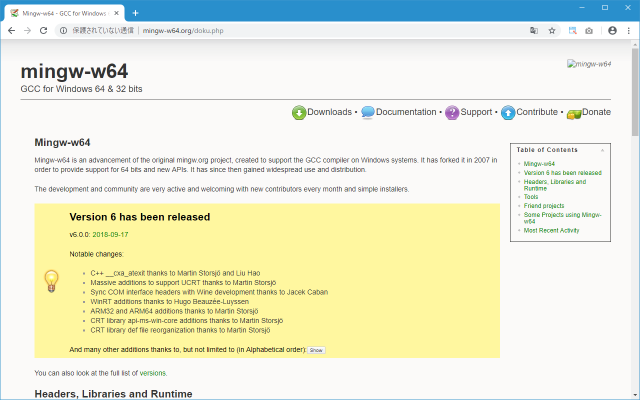
画面上部に表示されている「Downloads」をクリックしてください。
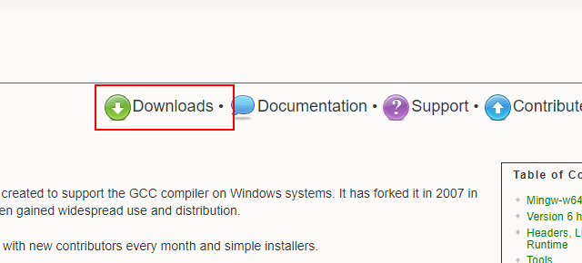
次のような画面が表示されます。
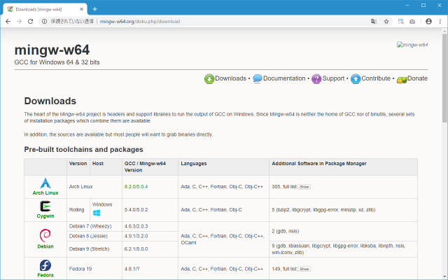
「MingW-W64-builds」をクリックしてください。
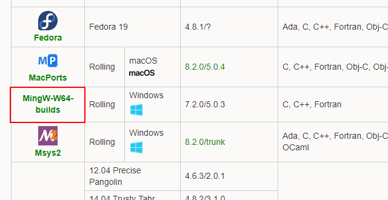
次のような画面が表示されたら「Installation」の右に表示されている「Sourceforge」をクリックしてください。
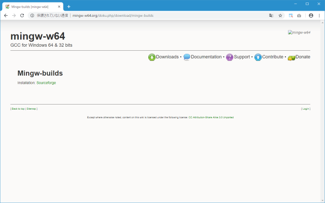
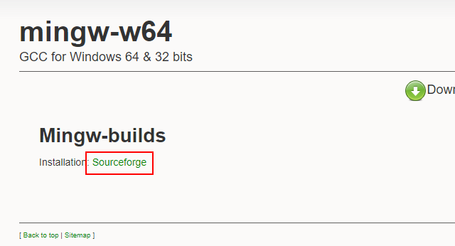
次のような画面が表示されてインストール用のファイルのダウンロードが開始されます。任意の場所に保存しておいてください。
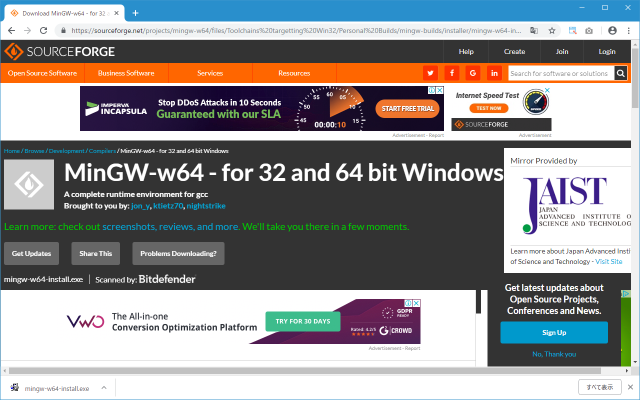
MinGW-w64のダウンロードはこれで完了です。
をインストールする
続いてインストールを行います。ダウンロードしたファイルをダブルクリックして実行してください。最初に次のような画面が表示されます。「Next」をクリックしてください。
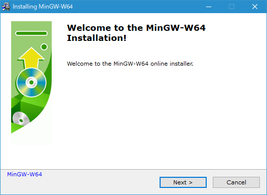
インストールに関する設定画面が表示されます。
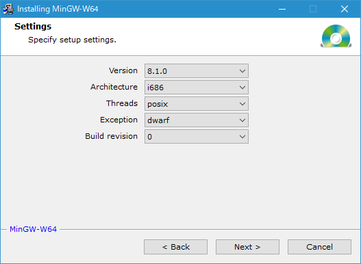
「version」は最新バージョンが自動で選択されていますが他のバージョンをインストールしたい場合は変更してください。「Architecture」は64bit環境の場合は「i686」から「x86_64」へ変更してください。スレッドの規格である「Thread」と例外処理の方法である「Exception」については詳しくわからなかったのでそのままにしてあります。「Build revision」は今回0しか選択できませんでした。
設定が終わりましたら「Next」をクリックしてください。
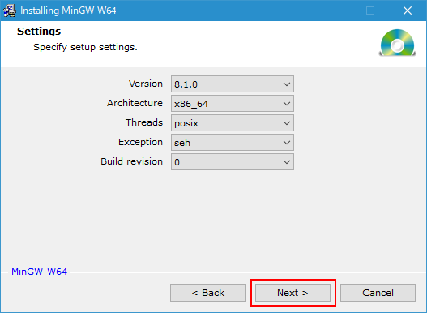
インストール先のディレクトリとスタートメニューにショートカットを作成するかどうかの設定です。必要に応じて変更してください。変更が終わりましたら「Next」をクリックしてください。
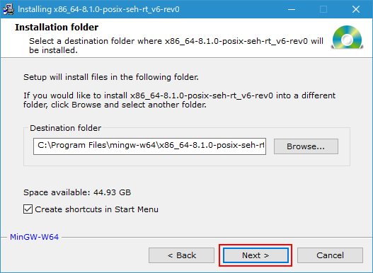
プログラム本体のダウンロードとインストールが開始されます。
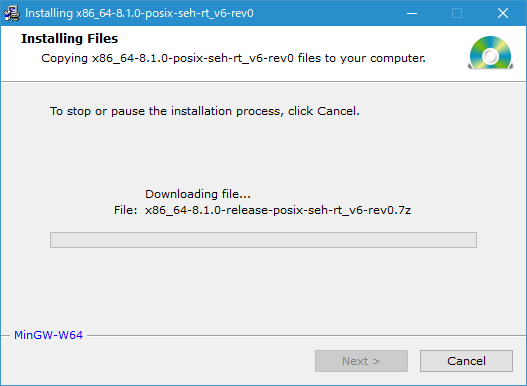
次のように表示されればインストールは完了です。「Next」をクリックしてください。
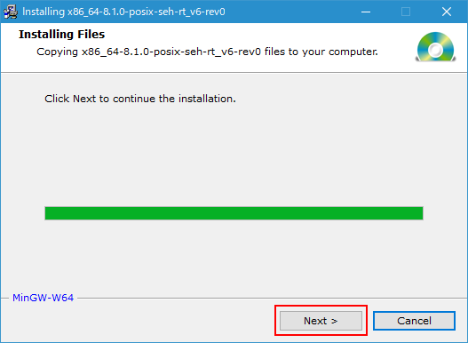
最後の画面です。「Finish」をクリックしてください。
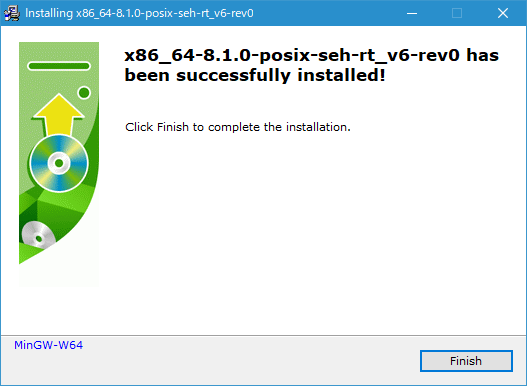
これでMinGW-w64のダウンロードおよびインストールは完了です。
PATHを設定する
MinGW-w64に含まれるGCCを任意のディレクトリから利用するにはPATHを設定しておく必要があります。対象となるプログラムはMinGW-w64をインストールしたディレクトリの中の「bin」ディレクトリに含まれています。
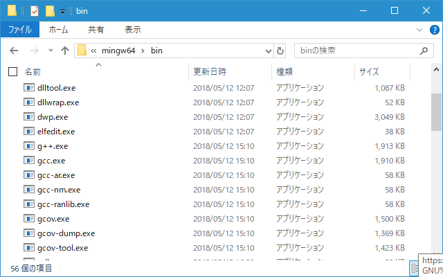
それではPATHを設定します。デスクトップ左下にあるスタートメニューをクリックし、表示されたアプリの一覧の「Windowsシステムツール」をクリックします。
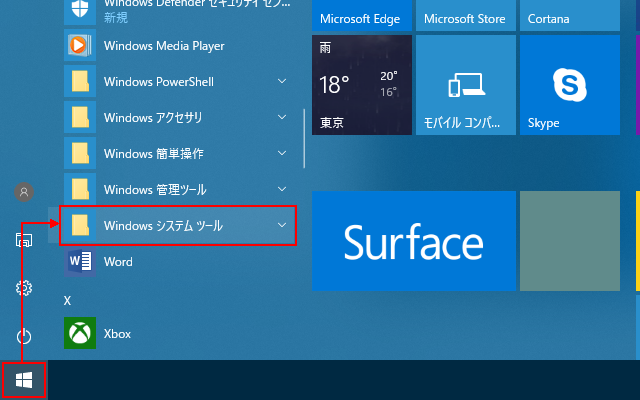
表示された中から「コントロールパネル」をクリックして下さい。
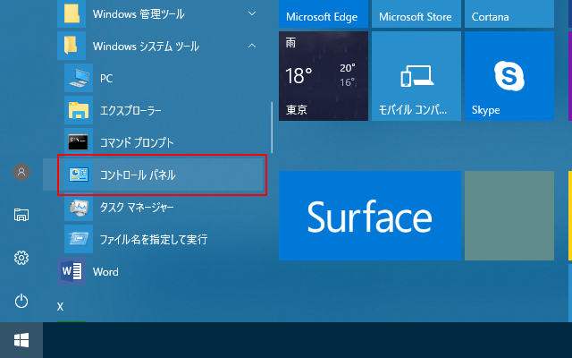
「コントロールパネル」が表示されたら「システムとセキュリティ」をクリックして下さい。
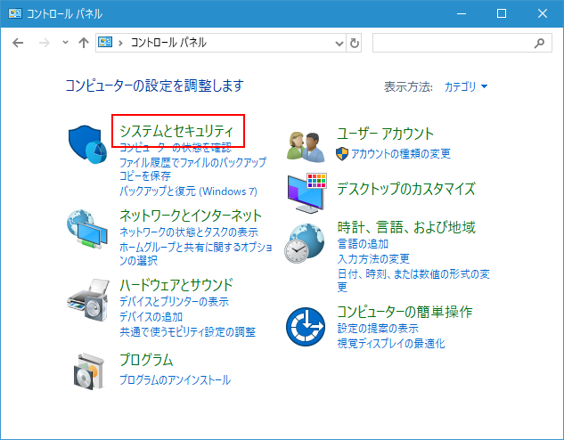
次の画面で「システム」をクリックして下さい。
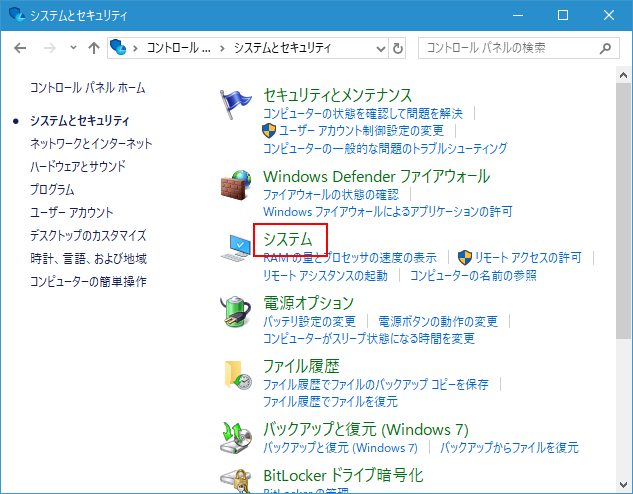
「システム」画面が表示されましたら左側メニューの中の「システムの詳細設定」をクリックして下さい。
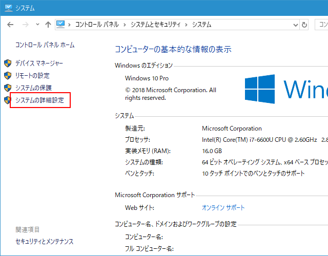
「システムのプロパティ」画面が表示されます。「環境変数」をクリックして下さい。
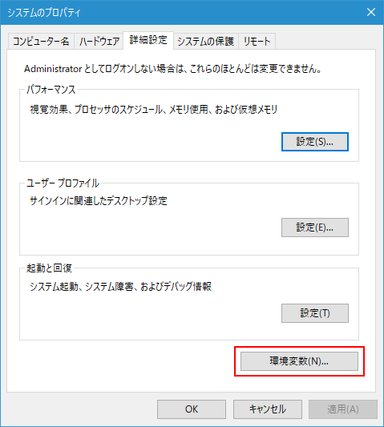
「環境変数」の画面が表示されます。この画面でPATHの設定を行います。
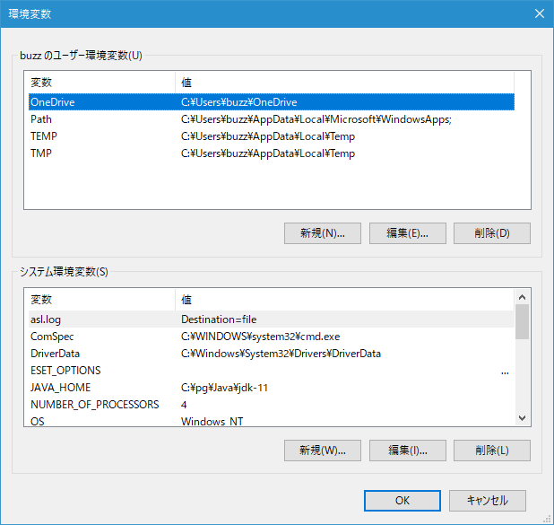
システム環境変数の中で「変数」が「Path」と書かれたものを探し、「Path」と書かれた箇所を一度クリックして選択してから「編集」ボタンをクリックして下さい。
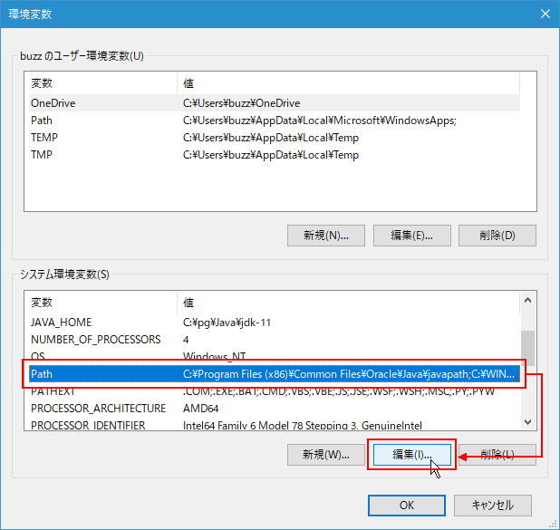
「環境変数名の編集」画面が表示されます。
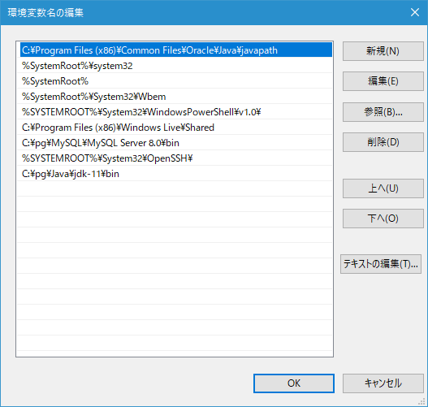
右上の「新規」をクリックすると左側の一覧の最後に新しい項目を追加できるようになりますので「C:\pg\mingw-w64\x86_64-8.1.0-posix-seh-rt_v6-rev0\mingw64\bin」を入力して下さい(ご自身がMinGW-w64をインストールしたディレクトリに合わせて入力して下さい)。入力が終わったら「OK」をクリックして下さい。
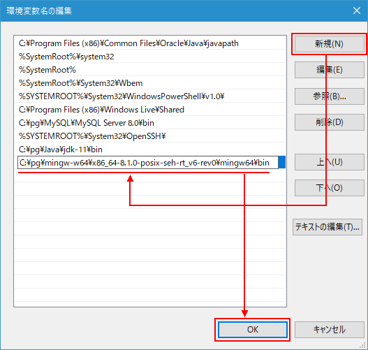
これで今までPATHに設定されていた値にGCCで使用するPATHを追加することができました。
-- --
それでは確認をしてみます。コマンドプロンプトを起動し、任意のディレクトリで「gcc -v」と入力して実行してください。
C:¥>gcc -v
いろいろと出力されるので途中は省略します。最後に次のように表示されればPATHの設定は無事完了しています。
Thread model: posix gcc version 8.1.0 (x86_64-posix-seh-rev0, Built by MinGW-W64 project) C:\>
MinGW-w64のダウンロードとインストール、そしてGCCを利用するための環境変数PATHの設定手順について解説しました。
( Written by Tatsuo Ikura )

著者 / TATSUO IKURA
初心者～中級者の方を対象としたプログラミング方法や開発環境の構築の解説を行うサイトの運営を行っています。